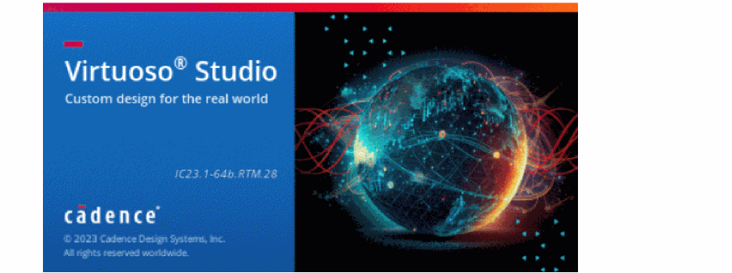
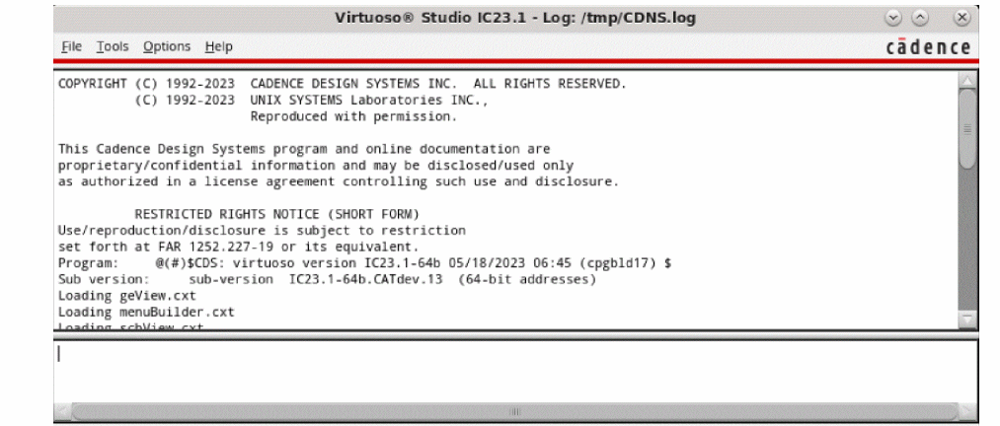

Starting Virtuoso Studio
To start Virtuoso Studio from a UNIX prompt:
-
Change to the working directory from where you want to start the software:
cd<your_working_directory> -
Confirm if the Virtuoso Studio executable is set properly:
which virtuoso -
Define the design library and reference libraries (
cds.lib). -
Type the command to start the Virtuoso Studio software:
Virtuoso &
Examples of starting a Cadence workbench follow:
-
To start Virtuoso Studio as a background process, type the following command:
virtuoso &
The splash screen is displayed before the CIW opens.
To disable the displaying of the splash screen use the shell environmentCDS_NOSPLASHthe command line option-nosplash.
The CIW appears. -
To start Virtuoso Studio as a background process, with outputs being sent to a log file, type the following command in CIW:
In this case, output sent to the terminal also gets written to the log file, which can be accessed later, even if Virtuoso Studio exits unexpectedly.virtuoso -log 1.log &
Alternatively, you can use the following options in Linux:-
Before closing the terminal, press
Ctrl+Zto interrupt the process and use thebgcommand to put the process in the background. -
Launch Virtuoso Studio using the
screencommand as follows:
/usr/bin/screen virtuoso -log myLog
In this case, even when the terminal runningscreenis closed, Virtuoso Studio continues to run.
-
Before closing the terminal, press
-
To start Cadence software in non-graphics mode, type the following command:
virtuoso -nograph
The CIW does not appear. The Design Environment prompt (>) appears.
Do not use an ampersand (&) after the command in nongraphics mode because you want to interact with the software rather than run the software in the background.
-
To execute a SKILL file automatically on starting, type the following command:
virtuoso -nograph -replay fileName
where fileName is the name of the SKILL file you want to execute.
Related Topics
Environment Settings in Virtuoso
Return to top